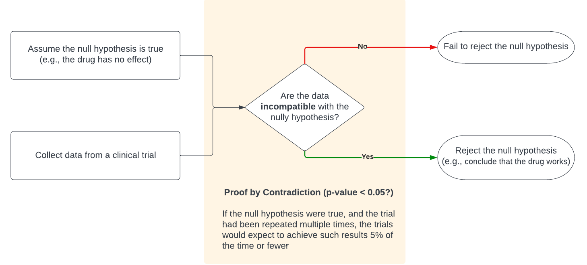

An Introduction to Bayesian Designs
CG Wang
Created: 2023-07-17 Mon 21:36
A Preamble
A Recent Nature Reviews Paper
A Recent Paper by FDA Authors
The Pfizer COVID-19 Study
- Primary efficacy analysis
- Based on the Bayesian posterior probability that vaccine efficacy (VE) \(>30\%\)
- The success criterion was \(P(\mbox{VE} > 30\%) > 98.6\%\) regardless of the p value
- Prior distribution of VE was centered at \(30\%\), which was considered pessimistic
- Prior distribution was "minimally informative"
- Interim analysis
- Four planned
- Stop for futility if the probability of meeting the success criteria at the end of the trial was less than 5%
- Stop for efficacy if \(P(\mbox{VE} > 30\%) > 99.5\%\)
- Result
- \(P(\mbox{VE} > 30\%) > 99.99\%\)
Basic Concepts
Bayes' Rule (or Bayes' Theorem)
\[P(A|B) = {P(A \cap B) \over P(B)} = {P(B|A) P(A) \over P(B)}\]
The Bayesian Approach
\begin{array}{ccccc}
P(A|B) & \propto & P(B|A) & \times & P(A) \\
\Downarrow & & \Downarrow & & \Downarrow \\
\pi(\theta | \mbox{Data}) & \propto &
L(\mbox{Data}| \theta) & \times & \pi_0(\theta)\\
\Uparrow & & \Uparrow & & \Uparrow \\
\mbox{posterior knowledge} & \propto & \mbox{information in data} & \times & \mbox{prior knowledge}\\
\end{array}
Features of Bayesian Approach
- Offers a flexible platform for incorporating prior knowledge
- Follows learning paradigm
- Expresses the magnitude and variability of a quantity of interest using the
entire distribution rather than a point estimate or confidence interval
- Inference is straightforward with the distribution
- E.g., point estimation, interval estimation, hypothesis testing, model selection, prediction
- Foundation for decision making in the presence of uncertainty
- Enables highly complex and flexible clinical trial designs
- E.g., adaptive designs, flexible interim monitoring, leveraging historical or real-world data, population pharmacokinetics and pharmacodynamics, etc.
Bayesian or Frequentist?
- Frequentist conditions on hypotheses
- Assuming that the null hypothesis is true, how likely are data we observed or any unobserved data that are farther from the null hypothesis?
- What is the "probability" of observing the data given the null hypothesis, \(P(Data | H_0)\) ?

- Bayesian conditions on data
- What do we know about the parameters of interest given the data?
- Given what we observed, what is the probability that the null hypothesis is true, \(P(H_0 | Data)\)?

- Why do we still need frequentist methods in clinical trials?
- Frequentism is particularly well-suited to the role of regulators
- They emphasize procedures that perform well in the long run
Prior and Prior Elicitation
Prior Knowledge
- Sources
- Preclinical data
- Previous study(ies) of the drug of interest or drugs in the same class
- Observational outcomes from the target patient population
- Expert opinion and/or literature-based estimates
- Goal is not to find the "perfect" knowledge
- The goal is to incorporate salient features of available scientific knowledge into the data analysis
Type of Priors
- Based on the amount of information
- Weakly informative prior
- Diffuse or vague prior
- Strongly informative prior
- Based on the impact
- Neutral prior
- Enthusiastic prior
- Skeptical prior
Prior Elicitation
- Often difficult for experts to provide direct information on parameters of
statistical models
- Model parameterization may be unfamiliar
- Scale of effect in statistical model may be awkward
- e.g., \(\theta \sim \mbox{Beta}(a, b)\)
- In such cases, we elicit information about quantities that are more familiar
to the expert and use that information to induce a prior on the model
parameters
- Could give a best guess and, perhaps, a wide probability interval for the quantity of interest
Prior Elicitation Example
- Suppose weight loss for a randomly selected individual under a particular treatment can be modeled as \(N(\mu, \sigma^2)\)
- How would we place a prior on \(\sigma\)?
- Since \(\sigma\) is not easy to think about, we could ask questions about the lower quartile of weight losses
- This number has 75% of the values above it and 25% below
- Lower quartile of a normal distribution is \(\mu − 0.675\sigma\)
- If expert’s experience suggests that lower quartile is \(\approx −5\) and that \(\mu \approx −2\), then a natural guess for \(\sigma\) is \[\sigma_0 = (−2 + 5)/0.675 = 4.44\]
- For \(\sigma^2\), could pick a distribution with median or mode equal to the best guess, \((4.44)^2\), that is suitably diffuse
Sensitivity Analysis
- Need to examine whether other reasonable prior distributions lead to qualitatively similar posterior conclusions
- Start with an expert knowledge-based prior (if available) and consider plausible alternatives to it
- Applying Bayesian inferential tools, obtain posterior inferences based on each prior (expert and alternative) to see affect the choice of prior has on final inferences
- Ideal situation is when there is minimal impact
- Report in any analysis when inferences are sensitive to the choice of prior
Bayesian Designs
Bayesian Decision-making
- A typical Yes-No decision \(\underline{P}(\theta > \underline{R}|Data) > \underline{C}\)
- A PRC rule
- Based on the posterior probability of the treatment effect(or parameter of interest), \(P(\theta|Data)\)
- Expresses the likelihood of achieving clinically meaningful effect size \(R\)
- Utilizes the desired minimum probability \(C\) as the threshold \(C\)
- The choice of \(R\) and \(C\) depend on the disease, the degree of unmet need,
etc
- A small \(R\) plus large \(C\) combination may give the same decision as a large \(R\) plus small \(C\)
- The choice should achieve the desirable study operating characteristics such as type I and II error rates
- For registrational trials, \(R\) is often set to be \(0\)
Bayesian Approaches in Clinical Trial Design
- "Truly" Bayes
- Make inferential decisions to maximize expected utility
- E.g., Bayesian optimal designs which choose design parameters to minimize the lost or maximize the gain conditioning on prior knowledge
- Calibrated Bayes
- Uses Bayesian approaches for modeling the study data
- Adjusts design parameters to achieve desirable frequentist operating characteristics (e.g., type I and II error)
Bayesian Design Examples
- Phase I studies
- Continue reassessment method
- Escalation with overdose control
- BOIN design
- Joint model for efficacy and toxicity
- Phase II studies
- Bayesian continuous monitoring
- Adaptive randomization and dose allocation
- Hierarchical models
- Phase III studies
- Phase II/III seamless trials
- Adaptive sample size
- Futility analyses using predictive probabilities
Case Studies
Case I: A Single Arm Study
- Consider a phase II single-arm cancer study with a sample size of 20 and 15 responders
- What is the response rate?
Case II: A Phase II POC Study
- Consider a phase II two-arm POC study
- Experimental arms vs. Cemi+Chemo
- pCR difference \(> 15\%\) is considered clinical meaningful
- If the posterior probability of pCR difference \(> 15\%\) is \(<20\%\), arm will be dropped for futility
- If posterior probability is pCR difference \(> 15\%\) is \(>80\%\), may further develop the experimental drug
Case III: Subgroup Analysis
- The Bayesian hierarchical model is both natural and flexible for combining information

Case Study IV: Mixture Prior
- There are already existing studies from which we can draw informed priors for designing a new study
- However, we are uncertain that the new study will be similar enough to the existing studies
- Even if they are the same, we don't want the prior knowledge to dominate the new study
- Bayesian solution
- Consider a robust prior which is a mixture of informative and non-information priors
- The mixture prior serves as a prior that discounts the existing knowledge
- Example: a robust prior for response rate can be constructed as
\[\pi_0(rate) = 0.7 Beta(1,1) + 0.3 Beta(45, 15),\]
where \(Beta(15, 45)\) is from an existing study
- The mixing weights \(0.7\) and \(0.3\) are design parameters that will need to be elicited from experts
Case Study V: A Study with a Drop-An-Arm Design
- Consider a study with arms
- A: Control
- B: Chemo + Cemi (High Dose)
- C: Chemo + Cemi (Low Dose)
- We will not have sufficient data to conclude if Arm B is superior to Arm C by frequentist hypothesis testing
- We would like to select one arm from Arms B and C as early as we can
- It will be efficient if we can share information between Arms B and C since they are similar
- Bayesian solution
- Let \(\alpha_B\) and \(\alpha_C\) be the response rate for arms B and C, respectively
- Model \(\alpha_B\) and \(\alpha_C\) jointly to allow information sharing between Arms B and C
- Assign a prior to \((\alpha_B, \alpha_C)\) such that
- \(\alpha_C \sim \pi_0(\alpha)\)
- \(\alpha_B|\alpha_C\) has mean \(\alpha_C\) with some variance
- Update the posterior distributions of \(\alpha_B\) and \(\alpha_C\) after every cohort of, say \(5\) patients
- Drop arm \(C\) if \(P(\alpha_B > \alpha_C | \mbox{data}) > 0.6\)
- Drop arm \(B\) if \(P(\alpha_C > \alpha_B | \mbox{data}) > 0.6\)
Case Study VI: Leveraging Real-World Data and Real-World Evidence

Case Study VII: Bayesian Umbrella, Bucket and Platform Trials

Summary
Why Bayesian?
- "Good" reason
- The study should employ a flexible design to incorporate external knowledge that is essential for achieving its objectives
- "Not-that-good" reasons
- We do not have a valid hypothesis to test
- We do not have adequate knowledge about the treatment
- we lack a suitable criterion for determining the success of the study
Next Session?
- Focus on phase I study designs
- 3+3
- BOIN